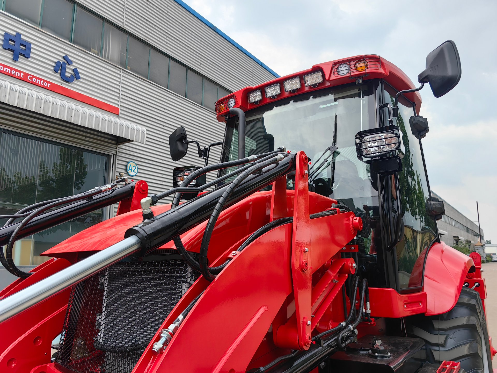
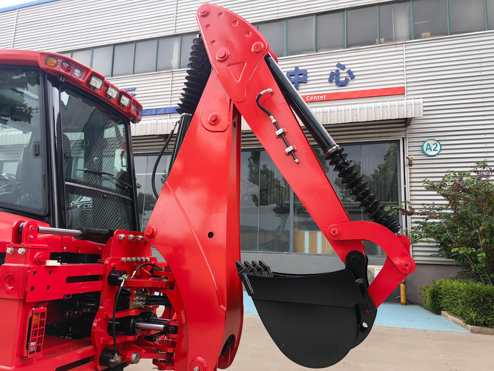
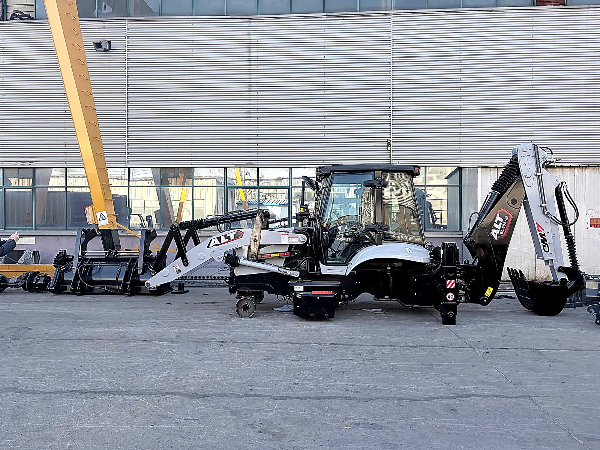

Before this machine ships, the spec is decided. What continent it heads for changes the answers — nowhere more than South America.
South America Is Not One Market
Buyers often write to me asking for "the backhoe loader for South America." There is no such machine. The continent contains some of the highest working altitudes on Earth, one of the wettest tropical basins, dry plains, coastal deserts, and everything between. A machine destined for a mining access road in Peru lives in a different world from one maintaining drainage in Colombia or loading grain in Argentina.
So the first question I ask South American buyers is not about budget. It is: where exactly will this machine work, at what altitude, in what ground, and in what weather? The honest supplier's job is to configure around those answers. The lazy one quotes a stock machine and hopes it works out.
Altitude: The Andes Question Every Buyer Should Ask
Let me start with the most misunderstood item, because it is the one I see cause the most regret.
Any diesel engine loses power as altitude increases. The physics is simple: higher altitude means thinner air, thinner air means less oxygen per cylinder fill, and less oxygen means less fuel can burn per cycle. The machine does not break — it just delivers less power and works harder to do the same job. Over months of digging in hard ground at altitude, that gap matters.
- Naturally aspirated engines suffer most. They depend entirely on atmospheric pressure to fill the cylinders. As air density falls, their output falls with it.
- Turbocharged engines compensate for a large part of the loss. The turbo forces more air into the cylinders, which is exactly what thin air starves them of. If your machines will work at significant altitude, this is the single most important spec line.
- Cooling drops as air thins too. Radiators move less air mass at altitude, so the cooling margin shrinks exactly when the engine is straining. Ask whether the radiator is sized for the site conditions, not just for the brochure.
- Ask for derating information, in writing. Engine manufacturers publish how output changes with altitude. A supplier who cannot tell you anything about this has either never thought about it or does not want to. Both are information.
My rule of thumb from the floor: if the machine will live above the clouds, the conversation about the engine happens before the conversation about the price.
Rain, Humidity, and Mud: The Tropical Basin Reality
The second half of the continent presents the opposite problem. In the Amazon basin, the Colombian coast, and much of Brazil's rural work, the enemies are water, mud, and corrosion — slowly, constantly, everywhere.
- Electrical system protection. Connectors, harnesses, and sensor wiring should be sealed and routed away from splash zones. Moisture in connectors causes the intermittent faults that drive owners crazy — the machine works, then it does not, then it works again.
- Corrosion protection on the frame and booms. Ask what surface treatment and paint system the machine carries, and inspect welds and joints — crevices are where rust starts in a humid climate.
- The cab is not a luxury item. A working cab with wipers and functional HVAC keeps the operator productive through the rainy season, and a productive operator is the cheapest upgrade a machine can have.
- Greasing discipline and access. Mud and moisture accelerate wear on pins and bushings. A machine that is easy to grease daily gets greased daily; one that takes twenty minutes of panel removal does not.
- Traction and tires. For soft ground, discuss tire options and whether a differential lock is available before ordering. Changing this after delivery is expensive and slow.

Arm structure, pin joints, and bucket geometry — the details that decide wear life when your nearest parts source is a shipping lane away.
The Parts Question: Why Distance Changes Your Buying Priority
Here is the part of the South America conversation I care about most, because it is where I have watched good purchases go bad.
South America is far from every major backhoe loader supply base — not only from China, but from everyone. Sea transit is measured in weeks, and that is before customs clearance and inland transport. This has a direct consequence: when something wears out, you cannot order it and have it next week. Nobody can. Not any supplier, from any country.
So the South American buyer's priority order is different from a buyer next door to the factory:
- Order a spare parts kit with the first machine. Filters with seals, engine and hydraulic oil, grease, pins and bushings, hydraulic hoses, a set of common seals and O-rings, bucket teeth and cutting edges. This is the first-year consumables list, and it is predictable because wear follows the service schedule.
- Confirm which components are on the machine, by name. A machine built from recognized engine, axle, gearbox, and hydraulic platforms can be supported by local and regional parts channels. A machine of unnamed "standard domestic parts" can only be supported by one shipping line. My China manufacturer guide covers component transparency in detail — for South America, it is not just a quality question, it is a supply-line question.
- Test the communication channel before you need it. Ask a real technical question during the buying process and see how long the answer takes and how specific it is. The response speed you experience before payment is the best one you will ever experience.
My position, stated plainly: after-sales is where the service begins, not where it ends. At long distance, that is not a slogan — it is the whole economics of the machine. A supplier's responsibility, response speed, and parts availability are worth more per year in South America than anywhere else on my list.
Language and Documentation
Most of the continent works in Spanish, Brazil in Portuguese. English is the default language of export, but a factory that already ships to Latin America often has Spanish materials for operation and maintenance basics. Ask directly what documentation languages are available, and decide accordingly — either the supplier provides your language, or you plan for a bilingual operator or translator on your side.
What matters more than the language on the cover page is whether someone answers. In my experience, Latin American buyers live on WhatsApp the way my other markets live on email. A supplier who responds on the channel you actually use is worth more than one with perfect documents and a silent inbox.
Import Realities: Duties, Papers, and Local Help
I will not quote you import duty numbers in this article, because they vary by country, change over time, and depend on how the machine is classified. Anyone who gives you a flat "the duty is X%" without asking which country has not done the work.
What I can tell you is structural:
- Every country has its own import rules and certification expectations. Work with a local customs broker who handles construction machinery in your country, and involve them early — before the contract, not after the container ships.
- The document set follows the machine. Commercial invoice, packing list, bill of lading, and the certificate of origin — which we arrange together with you according to your country's requirements. My import guide covers the documentation side in detail.
- Agree the spec sheet in the contract. Same principle as anywhere, but the consequences of a mismatch are worse when the nearest replacement is an ocean away.

Container day. At South American distances, what is packed — parts, documents, seals — matters more than what the brochure promised.
A South America Spec Checklist
If you take one thing from this article, take this list. Bring it to any supplier, including me:
- Working altitude range — and the engine's turbocharged status and derating information in writing.
- Climate and ground conditions — sealed electrical connectors, corrosion protection, cab with wipers and HVAC, tire options, differential lock for soft ground.
- Named components — engine, axles, gearbox, hydraulic pump and valves, all by brand and model.
- First-year spare parts kit quoted with the machine, not after the first breakdown.
- Documentation language and a named technical contact who answers on your channel.
- Inspection before shipment — third-party or video, tied to the payment milestone. The inspection checklist on this site is the list I would use.
- A customs broker involved before the contract is signed.
Vivian's Bottom Line
South America rewards buyers who respect its geography and punishes those who buy a brochure. Altitude, humidity, and distance are not complications — they are the actual specification. Get the engine question right for the Andes, the protection question right for the tropics, and the parts question right for the ocean between us, and a backhoe loader from a serious factory will earn its keep for years.
I sit in the factory every day, so I cannot pretend the logistics are shorter than they are. What I can do is make sure the machine that goes into the container is the right one for where it is going — and that the parts shelf on your side is full before the first rainy season. If you tell me your country, your site conditions, and what the machine will actually do all day, I will tell you what matters in the spec and what does not.
Working in South America?
Tell me your country, altitude, and ground conditions — I will configure the machine and the parts kit around them, and be straight with you about anything that does not fit. No pressure, just a factory-floor read on your project.
Request a Quote for My Project